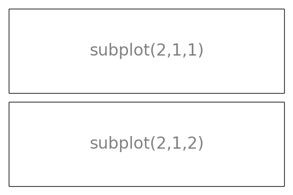
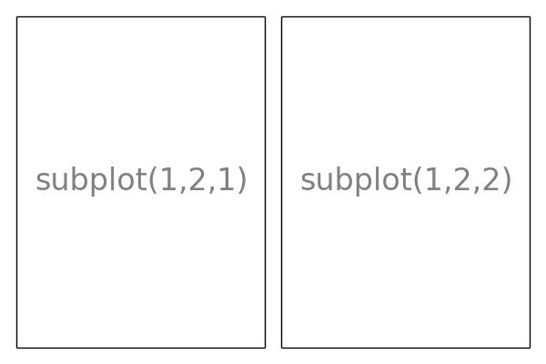
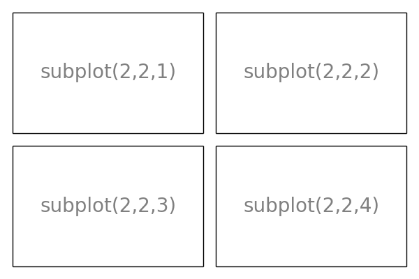
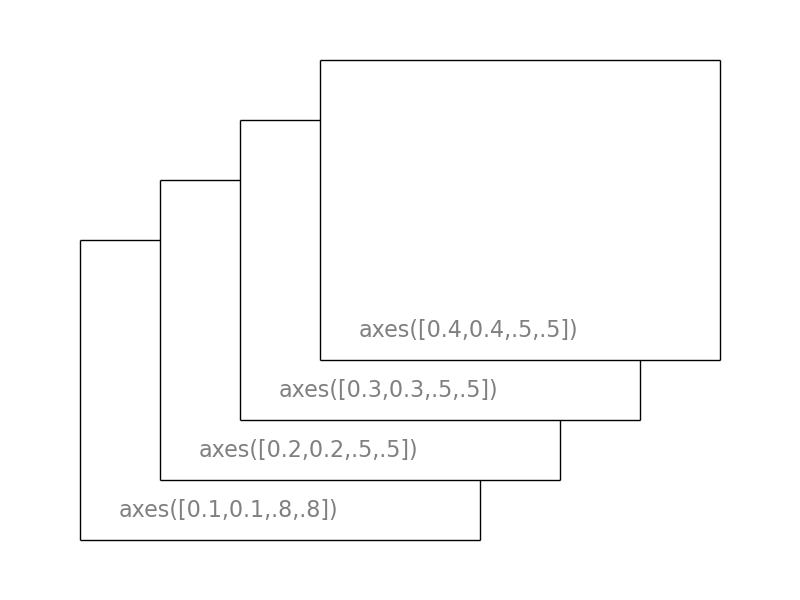

| Autores: | Nicolas Rougier, Mike Müller, Gaël Varoquaux |
|---|
Contenido
Matplotlib es probablemente el paquete de Python más utilizado para gráficos 2D. Proporciona una manera muy rápida de visualizar datos y figuras con calidad de publicación en varios formatos. Vamos a explorar Matplotlib en modo interactivo cubriendo los casos más comunes.
IPython es un shell interactivo mejorado de Python que tiene un montón de características interesantes, incluyendo entradas y salidas con nombre, el acceso a comandos de la shell, la mejora de depuración y mucho más. Cuando se inicia con el argumento -pylab en la ventana de comandos (–pylab desde la versión IPython 0.12), permite sesiones interactivas Matplotlib que tienen la misma funcionalidad que Matlab/Mathematica.
pylab proporciona una interfaz orientada a objetos a la biblioteca de trazado Matplotlib cercano a Matlab(TM). Por tanto, la mayoría de los comandos de trazado en pylab tiene análogos Matlab(TM) con similares argumentos. Comandos importantes se explican con ejemplos interactivos.
En esta sección, llamaremos a las funciones seno y coseno en la misma gráfica. A partir de la configuración por defecto, vamos a enriquecer la figura paso a paso para que sea más agradable.
El primer paso es obtener los datos para las funciones seno y coseno:
import numpy as np
X = np.linspace(-np.pi, np.pi, 256, endpoint=True)
C, S = np.cos(X), np.sin(X)
X es ahora un arreglo numpy con 256 valores que van desde -π a +π (incluido). C es la función coseno (256 valores) y S es la función seno (256 valores).
Para ejecutar el ejemplo, teclee los comandos en una sesión interactiva IPython:
$ ipython --pylab
Esto nos lleva a el shell IPython:
IPython 0.13 -- An enhanced Interactive Python.
? -> Introduction to IPython's features.
%magic -> Information about IPython's 'magic' % functions.
help -> Python's own help system.
object? -> Details about 'object'. ?object also works, ?? prints more.
Welcome to pylab, a matplotlib-based Python environment.
For more information, type 'help(pylab)'.
o puede descargar cada uno de los ejemplos y ejecutarlo usando el intérprete estandar python:
$ python exercice_1.py
Usted puede obtener el código para cada paso haciendo clic en la figura correspondiente.

Matplotlib viene con un conjunto de valores predeterminados que permiten la personalización de todos los tipos de propiedades. Puede controlar los valores predeterminados de casi todas las propiedades en matplotlib: tamaño de figura y dpi, grosor de línea, color y estilo, ejes , ejes y propiedades de cuadrícula, propiedades de texto y fuente, etc.
import pylab as pl
import numpy as np
X = np.linspace(-np.pi, np.pi, 256, endpoint=True)
C, S = np.cos(X), np.sin(X)
pl.plot(X, C)
pl.plot(X, S)
pl.show()
En el siguiente script, hemos creado una instancia (y comentamos) todos los ajustes de la figura que influyen en la aparición del gráfico. Los ajustes son explícitos para configurar los valores predeterminados, pero usted puede jugar interactivamente con los valores para explorar su efecto (ver `Line properties`_ y `Line styles`_ más abajo).:
import pylab as pl
import numpy as np
# Crear una figura de 8x6 puntos de tamaño, 80 puntos por pulgada
pl.figure(figsize=(8, 6), dpi=80)
# Crear una nueva subgráfica en una rejilla de 1x1
pl.subplot(1, 1, 1)
X = np.linspace(-np.pi, np.pi, 256, endpoint=True)
C, S = np.cos(X), np.sin(X)
# Graficar la función coseno con una línea continua azul de 1 pixel de grosor
pl.plot(X, C, color="blue", linewidth=1.0, linestyle="-")
# Graficar la función coseno con una línea continua verde de 1 pixel de grosor
pl.plot(X, S, color="green", linewidth=1.0, linestyle="-")
# Establecer límites del eje x
pl.xlim(-4.0, 4.0)
# Ticks en x
pl.xticks(np.linspace(-4, 4, 9, endpoint=True))
# Establecer límites del eje y
pl.ylim(-1.0, 1.0)
# Ticks en y
pl.yticks(np.linspace(-1, 1, 5, endpoint=True))
# Guardar la figura usando 72 puntos por pulgada
# savefig("exercice_2.png", dpi=72)
# Mostrar resultado en pantalla
pl.show()
Primer paso, queremos mostrar la función coseno en azul, la función seno en rojo y un línea ligeramente más gruesa para ambas funciones. También vamos a modificar el tamaño para que sea ligeramente más horizontal.
...
pl.figure(figsize=(10, 6), dpi=80)
pl.plot(X, C, color="blue", linewidth=2.5, linestyle="-")
pl.plot(X, S, color="red", linewidth=2.5, linestyle="-")
...
Debido a los límites actuales la figura se muestra un poco ajustada, cambiamos los límites con el fin de ver con claridad todos los puntos.
...
pl.xlim(X.min() * 1.1, X.max() * 1.1)
pl.ylim(C.min() * 1.1, C.max() * 1.1)
...
Los graduación actual no es ideal, ya que no muestran los valores requeridos (+/-π,+/-π/2) para la función seno y la función coseno. Los cambiamos de tal manera que sólo muestren estos valores.
...
pl.xticks([-np.pi, -np.pi/2, 0, np.pi/2, np.pi])
pl.yticks([-1, 0, +1])
...
Consejo
Documentación
Las graduaciones están correctamente colocadas, pero su etiqueta no es muy explícita. Podríamos suponer que 3.142 es π pero es mejor hacerlo de forma explícita. Cuando establecemos los valores de graduación, también podemos proporcionar una etiqueta correspondiente en el segundo argumento de la lista. Tenga en cuenta que vamos a utilizar látex para permitir una buena renderización de la etiqueta.
...
pl.xticks([-np.pi, -np.pi/2, 0, np.pi/2, np.pi],
[r'$-\pi$', r'$-\pi/2$', r'$0$', r'$+\pi/2$', r'$+\pi$'])
pl.yticks([-1, 0, +1],
[r'$-1$', r'$0$', r'$+1$'])
...
Los spines son las líneas que unen las marcas de graduación del eje y muestran los límites de datos. Se pueden colocar en posiciones arbitrarias, hasta ahora estaban en el borde del eje. Vamos a cambiar eso, ya que queremos tener en el medio. Puesto que hay cuatro de ellos (arriba/abajo/izquierda/derecha), vamos a descartar la parte superior y derecha al establecer su color a ninguno y vamos a mover la parte inferior y la izquierdas para coordinar 0 en las coordenadas de datos.
...
ax = pl.gca() # gca stands for 'get current axis'
ax.spines['right'].set_color('none')
ax.spines['top'].set_color('none')
ax.xaxis.set_ticks_position('bottom')
ax.spines['bottom'].set_position(('data',0))
ax.yaxis.set_ticks_position('left')
ax.spines['left'].set_position(('data',0))
...
Vamos a añadir una leyenda en la esquina superior izquierda. Esto sólo requiere la adición de la palabra clave label (que se utilizará en el cuadro de la leyenda) en el comando plot.
...
pl.plot(X, C, color="blue", linewidth=2.5, linestyle="-", label="cosine")
pl.plot(X, S, color="red", linewidth=2.5, linestyle="-", label="sine")
pl.legend(loc='upper left')
...
Vamos a anotar algunos puntos interesantes utilizando el comando de annotate. Elegimos el valor 2π/3 y queremos anotar tanto en la función seno y el coseno. Haremos primero dibujar un marcador en la curva, así como una línea de puntos recta. A continuación, vamos a utilizar el comando annotate que muestra parte del texto con una flecha.
...
t = 2 * np.pi / 3
pl.plot([t, t], [0, np.cos(t)], color='blue', linewidth=2.5, linestyle="--")
pl.scatter([t, ], [np.cos(t), ], 50, color='blue')
pl.annotate(r'$sin(\frac{2\pi}{3})=\frac{\sqrt{3}}{2}$',
xy=(t, np.sin(t)), xycoords='data',
xytext=(+10, +30), textcoords='offset points', fontsize=16,
arrowprops=dict(arrowstyle="->", connectionstyle="arc3,rad=.2"))
pl.plot([t, t],[0, np.sin(t)], color='red', linewidth=2.5, linestyle="--")
pl.scatter([t, ],[np.sin(t), ], 50, color='red')
pl.annotate(r'$cos(\frac{2\pi}{3})=-\frac{1}{2}$',
xy=(t, np.cos(t)), xycoords='data',
xytext=(-90, -50), textcoords='offset points', fontsize=16,
arrowprops=dict(arrowstyle="->", connectionstyle="arc3,rad=.2"))
...
Las etiquetas graduadas ahora son apenas visibles debido a las líneas azules y rojas. Podemos hacerlos más grandes y también podemos ajustar sus propiedades, que van a estar renderizados en un fondo blanco semi-transparente. Esto nos permitirá ver tanto los datos y las etiquetas.
...
for label in ax.get_xticklabels() + ax.get_yticklabels():
label.set_fontsize(16)
label.set_bbox(dict(facecolor='white', edgecolor='None', alpha=0.65))
...
Hasta ahora hemos utilizado implícitamente la creación de ejes y figuras. Esto es útil para hacer gráficas rápidas. Podemos tener más control sobre la figura, subplots y ejes explícitamente. Una figura en matplotlib significa toda la ventana en la interfaz de usuario. Dentro de esta figura no pueden haber subplots . Mientras que las posiciones de los subplots en una cuadrícula regular, permite la colocación libre de ejes dentro de la figura. Ambos puede ser útiles dependiendo de su intención. Ya hemos trabajado con figuras y subplots sin llamarlos explícitamente. Cuando llamamos a un gráfico, matplotlib llama a gca() para obtener los ejes actuales y gca a su vez llama a gcf() para obtener la figura actual. Si no hay ninguna figure() es llamada para hacer una, hablando estrictamente, se hace un subplot(111). Echemos un vistazo a los detalles.
Una figura es una ventana(s) en el GUI con título “Figure #”. Las figuras están numeradas a partir de 1, esto es claramente un ‘estilo’ MATLAB. Existen varios parámetros que determinar que la figura se vea así:
| Argumento | Por defecto | Descripción |
|---|---|---|
| num | 1 | número de figura |
| figsize | figure.figsize | tamaño de figura en pulgadas (ancho, alto) |
| dpi | figure.dpi | resolución en puntos por pulgada |
| facecolor | figure.facecolor | color de fondo del dibujo |
| edgecolor | figure.edgecolor | color del borde alrededor del fondo del dibujo |
| frameon | True | dibujar figura en marcos o no |
Los valores por defecto se pueden especificar en el archivo de recursos y se utilizará la mayor parte del tiempo. Sólo el número de la figura se cambia con frecuencia.
Cuando se trabaja con la interfaz gráfica de usuario se puede cerrar una figura haciendo clic en la X de la esquina superior derecha. Sin embargo, se puede cerrar una figura llamando a close. Según el argumento para cerrar (1) la figura actual (sin argumento) , (2) una figura específica (número de la figura o instancia de figura es argumento ), o (3) todas las figuras (all es argumento).
Al igual que con otros objetos, también se puede establecer las propiedades de la figura con setp o con el método set_something.
Con subplot puede organizar gráficas en una cuadrícula regular. Es necesario especificar el número de filas, columnas y el número del gráfico. Tenga en cuenta que el comando gridspec es una alternativa más poderosa.
  Los ejes son muy similares a los subplots, permiten colocar gráficos en cualquier ubicación en la figura. Así que si queremos poner un gráfico pequeño dentro de uno más grande con los mismos ejes.
Las graduaciones con formato son una parte importante de los gráficos listos para publicar. Matplotlib ofrece un sistema totalmente configurable para graduaciones. Hay graduaciones localizadoras para especificar dónde deben aparecer las graduaciones y graduaciones con formato para dar el aspecto que desea a las graduaciones. Las graduaciones mayores y menores puede ser localizadas y formateadas de forma independiente el uno del otro. Por defecto no se muestra la graduación menor, es decir, sólo hay una lista vacía de ellos, ya que estan con NullLocator (ver a continuación).
Las localizadoras de graduación controlan las posiciones de las graduaciones. Ellas se establecen como:
ax = pl.gca()
ax.xaxis.set_major_locator(eval(locator))
Hay varios localizadores para diferentes tipos de requerimientos:

Todos estos localizadores derivan de la clase base matplotlib.ticker.Locator. Usted puede hacer su propio localizador derivandola de la clase base. Manipulación de fechas con graduaciones puede ser especialmente difícil. Por lo tanto, matplotlib proporciona localizadores especiales en matplotlib.dates.

Consejo
Es necesario utilizar el comando fill_between.
A partir del código de abajo, trate de reproducir el gráfico en forma correcta tomando en cuenta las zonas rellenadas:
n = 256
X = np.linspace(-np.pi, np.pi, n, endpoint=True)
Y = np.sin(2 * X)
pl.plot(X, Y + 1, color='blue', alpha=1.00)
pl.plot(X, Y - 1, color='blue', alpha=1.00)
Haga clic en la figura para la solución.
Consejo
Color está dado por el ángulo de (X, Y).
A partir del código de abajo, trate de reproducir el gráfico en forma correcta tomando en cuenta el tamaño de marcas, el color y la transparencia.
n = 1024
X = np.random.normal(0,1,n)
Y = np.random.normal(0,1,n)
pl.scatter(X,Y)
Haga clic en la figura para la solución.
Consejo
Tomar en cuenta la alineación del texto.
A partir del código de abajo, trate de reproducir el gráfico en forma correcta agregando etiquetas en las barras rojas.
n = 12
X = np.arange(n)
Y1 = (1 - X / float(n)) * np.random.uniform(0.5, 1.0, n)
Y2 = (1 - X / float(n)) * np.random.uniform(0.5, 1.0, n)
pl.bar(X, +Y1, facecolor='#9999ff', edgecolor='white')
pl.bar(X, -Y2, facecolor='#ff9999', edgecolor='white')
for x, y in zip(X, Y1):
pl.text(x + 0.4, y + 0.05, '%.2f' % y, ha='center', va='bottom')
pl.ylim(-1.25, +1.25)
Haga clic en la figura para la solución.
Consejo
Es necesario utilizar el comando clabel.
A partir del código de abajo, trate de reproducir el gráfico en forma correcta tomando en cuneta el colormap (ver Colormaps más abajo).
def f(x, y):
return (1 - x / 2 + x ** 5 + y ** 3) * np.exp(-x ** 2 -y ** 2)
n = 256
x = np.linspace(-3, 3, n)
y = np.linspace(-3, 3, n)
X, Y = np.meshgrid(x, y)
pl.contourf(X, Y, f(X, Y), 8, alpha=.75, cmap='jet')
C = pl.contour(X, Y, f(X, Y), 8, colors='black', linewidth=.5)
Haga clic en la figura para la solución.
Consejo
Necesita tomar en cuenta el origin de la imagen en el comando imshow y usar un colorbar.
A partir del código de abajo, trate de reproducir el gráfico en forma correcta teniendo en cuenta el colormap, interpolación de imágenes y el origen.
def f(x, y):
return (1 - x / 2 + x ** 5 + y ** 3) * np.exp(-x ** 2 - y ** 2)
n = 10
x = np.linspace(-3, 3, 4 * n)
y = np.linspace(-3, 3, 3 * n)
X, Y = np.meshgrid(x, y)
pl.imshow(f(X, Y))
Haga clic en la figura para la solución.
Consejo
Debe modificar Z.
A partir del código de abajo, trate de reproducir el gráfico en forma correcta tomando en cuenta los colores y el tamaño de divisiones.
Z = np.random.uniform(0, 1, 20)
pl.pie(Z)
Haga clic en la figura para la solución.
Consejo
Tienes que dibujar las flechas dos veces.
A partir del código anterior, intente reproducir el gráfico en la toma correcta tomando en cuenta los colores y direcciones.
n = 8
X, Y = np.mgrid[0:n, 0:n]
pl.quiver(X, Y)
Haga clic en la figura para la solución.
A partir del código anterior, intente reproducir el gráfico en la toma correcta tomando en cuenta los estilos de línea.
axes = pl.gca()
axes.set_xlim(0, 4)
axes.set_ylim(0, 3)
axes.set_xticklabels([])
axes.set_yticklabels([])
Haga clic en la figura para la solución.
Consejo
Puede utilizar varios subplots con diferentes particiones.
A partir del código de abajo, intente reproducir el gráfico de la derecha.
pl.subplot(2, 2, 1)
pl.subplot(2, 2, 3)
pl.subplot(2, 2, 4)
Haga clic en la figura para la solución.
Consejo
Tiene que modificar la línea axes
A partir del código de abajo, intente reproducir el gráfico de la derecha.
pl.axes([0, 0, 1, 1])
N = 20
theta = np.arange(0., 2 * np.pi, 2 * np.pi / N)
radii = 10 * np.random.rand(N)
width = np.pi / 4 * np.random.rand(N)
bars = pl.bar(theta, radii, width=width, bottom=0.0)
for r, bar in zip(radii, bars):
bar.set_facecolor(cm.jet(r / 10.))
bar.set_alpha(0.5)
Haga clic en la figura para la solución.
Consejo
Debe usar contourf
A partir del código de abajo, intente reproducir el gráfico de la derecha.
from mpl_toolkits.mplot3d import Axes3D
fig = pl.figure()
ax = Axes3D(fig)
X = np.arange(-4, 4, 0.25)
Y = np.arange(-4, 4, 0.25)
X, Y = np.meshgrid(X, Y)
R = np.sqrt(X**2 + Y**2)
Z = np.sin(R)
ax.plot_surface(X, Y, Z, rstride=1, cstride=1, cmap='hot')
Haga clic en la figura para la solución.
Ver también
Consejo
Echa un vistazo a matplotlib logo.
Trate de hacer lo mismo desde el principio !
Haga clic en la figura para la solución.
Matplotlib esta beneficiada con una extensa documentación, así como una gran comunidad de usuarios y desarrolladores. Estos son algunos enlaces de interés:
|
|
El código está bien documentado y se puede acceder rápidamente a un comando específico dentro una sesión de python:
>>> import pylab as pl
>>> help(pl.plot)
Help on function plot in module matplotlib.pyplot:
plot(*args, **kwargs)
Plot lines and/or markers to the
:class:`~matplotlib.axes.Axes`. *args* is a variable length
argument, allowing for multiple *x*, *y* pairs with an
optional format string. For example, each of the following is
legal::
plot(x, y) # plot x and y using default line style and color
plot(x, y, 'bo') # plot x and y using blue circle markers
plot(y) # plot y using x as index array 0..N-1
plot(y, 'r+') # ditto, but with red plusses
If *x* and/or *y* is 2-dimensional, then the corresponding columns
will be plotted.
...
La galería matplotlib es muy útil cuando se busca la manera de hacer un gráfico dado. Cada ejemplo viene con su código fuente.
Una galería más pequeña está disponible aquí.
Por último, hay una lista de correo de usuarios donde se puede pedir ayuda y una lista de correo de desarrolladores que es más técnica.
Aquí hay una serie de cuadros que muestran las propiedades y estilos principales.
| Propiedad | Descripción | Apariencia |
|---|---|---|
| alpha (o a) | transparencia alpha en escala 0-1 | |
| antialiased | True o False - usar renderizado suavizado | |
| color (or c) | matplotlib color arg | |
| linestyle (o ls) | ver `Line properties`_ | |
| linewidth (o lw) | float, the line width in points | |
| solid_capstyle | Cap style for solid lines | |
| solid_joinstyle | Join style for solid lines | 
|
| dash_capstyle | Cap style for dashes | |
| dash_joinstyle | Join style for dashes | |
| marker | see `Markers`_ | |
| markeredgewidth (mew) | line width around the marker symbol | |
| markeredgecolor (mec) | edge color if a marker is used | |
| markerfacecolor (mfc) | face color if a marker is used | |
| markersize (ms) | size of the marker in points |
Todos los colormaps pueden invertirse añadiendo _r. Por ejemplo, gray_r es el inverso de gray.
Si desea saber más acerca de colormaps, revise Documenting the matplotlib colormaps.